"The natural jewelry of Africa"
From "Marvelous Dwellers" Series
Once I was lucky to live an extraordinary adventure in Africa. I could contemplate majestic animals in their wild habitat, enjoying their freedom, showing off an imposing body structure and temperament, while others conquered me through pure beauty and charisma.
I can’t tell how intense the experience was for me. I suppose that my feelings could be the regular ones for everybody in that situation: life spreading everywhere, a myriad of natural world surrounding us, the most hallucinating sounds (roarings of lions and lionesses, the singing of birds, the punch on the land of herds of buffalos, the wivering of elephant’s ears in the air, enviable pampering and caressing shared among the animals of the same species…). It was hard to hold myself from trying to touch them, but I have to acknowledge that the fear was high too. In the jungle there’s no rule.
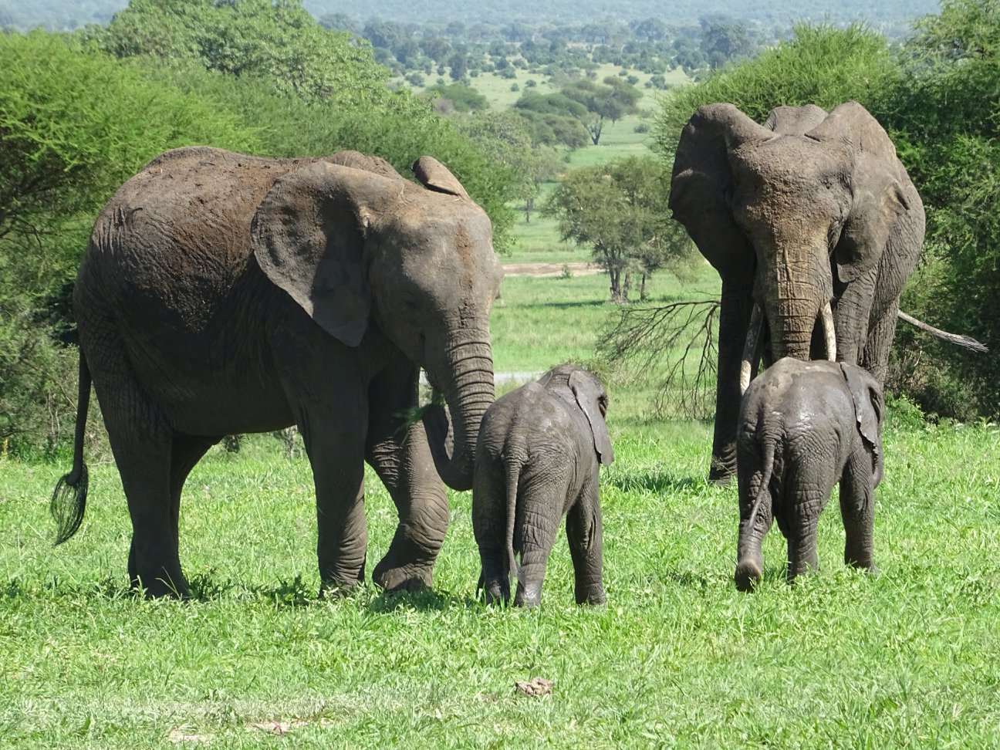 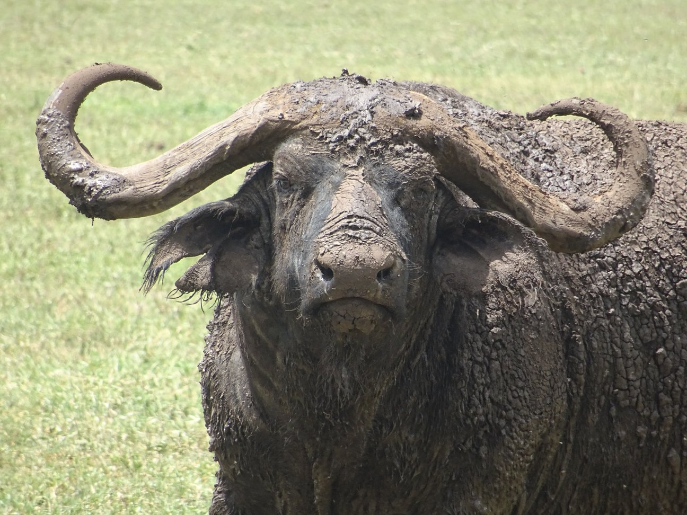 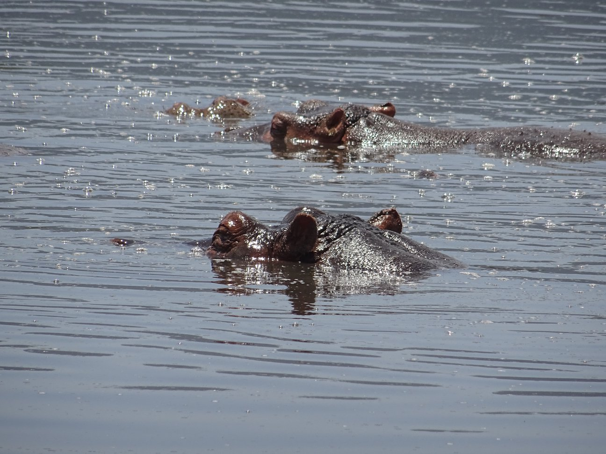 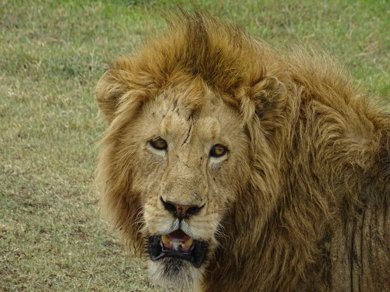 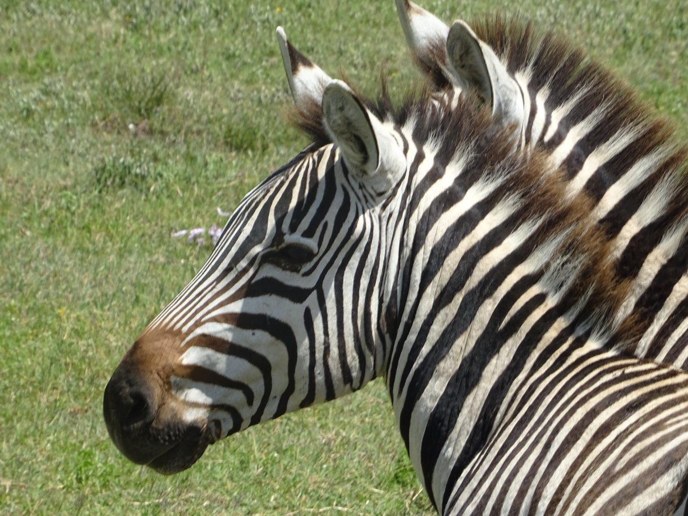
But what I want to present here today, is an animal who brought me joy and happiness and makes me laugh even today when I see it.
After all, not all living beings need to count with incredible super powers, being immortal or being shrouded in mystery to be considered amazing! They can be just very original and funny! They can surprise us with unthinkable qualities! So... what about this marvelous monkey?
Disclosure statement: the next content has explicit noble parts and may not be proper for underage.
I can’t tell how intense the experience was for me. I suppose that my feelings could be the regular ones for everybody in that situation: life spreading everywhere, a myriad of natural world surrounding us, the most hallucinating sounds (roarings of lions and lionesses, the singing of birds, the punch on the land of herds of buffalos, the wivering of elephant’s ears in the air, enviable pampering and caressing shared among the animals of the same species…). It was hard to hold myself from trying to touch them, but I have to acknowledge that the fear was high too. In the jungle there’s no rule.
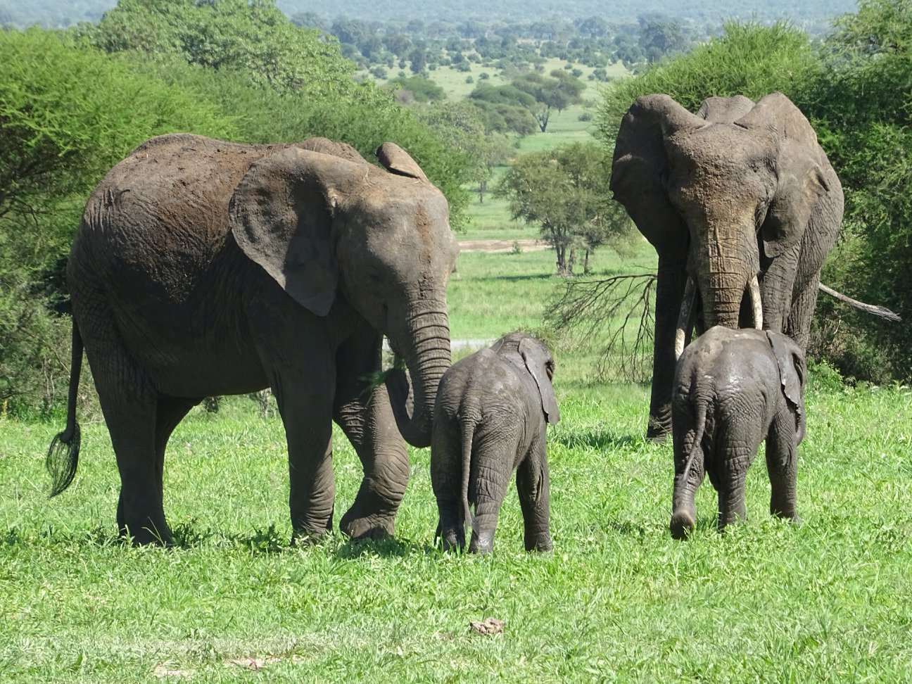 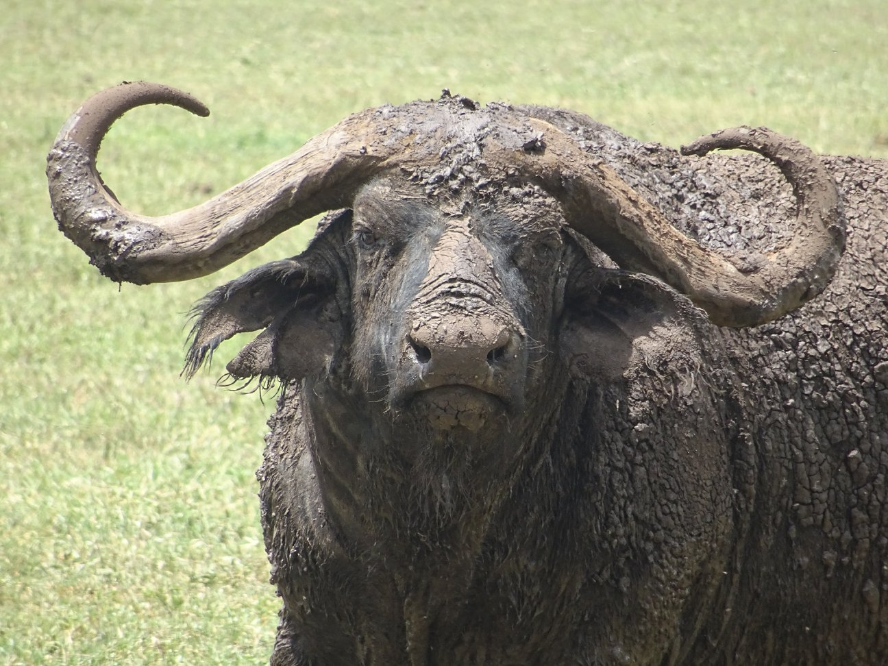 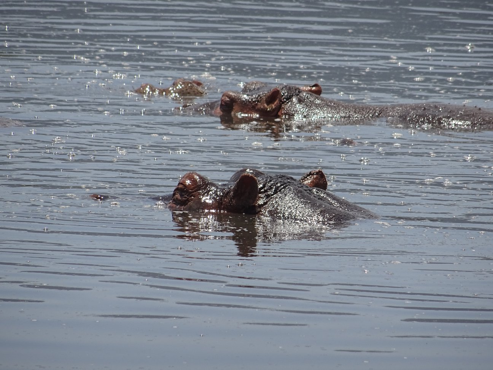 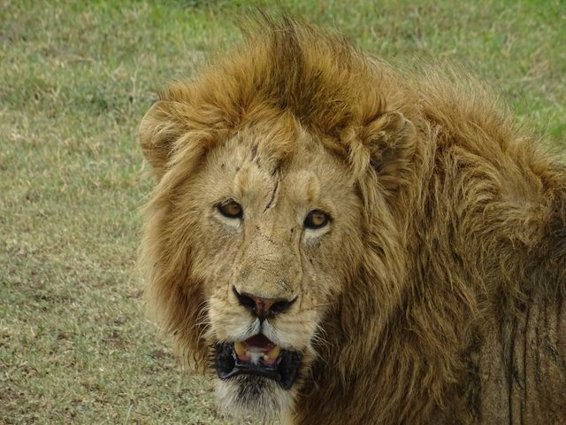 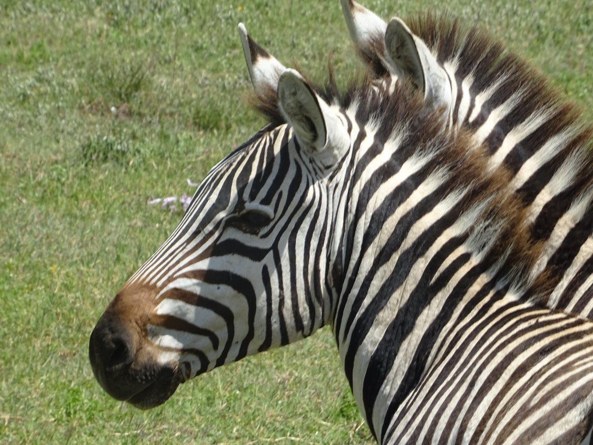
But what I want to present here today, is an animal who brought me joy and happiness and makes me laugh even today when I see it.
After all, not all living beings need to count with incredible super powers, being immortal or being shrouded in mystery to be considered amazing! They can be just very original and funny! They can surprise us with unthinkable qualities! So... what about this marvelous monkey?
Disclosure statement: the next content has explicit noble parts and may not be proper for underage.
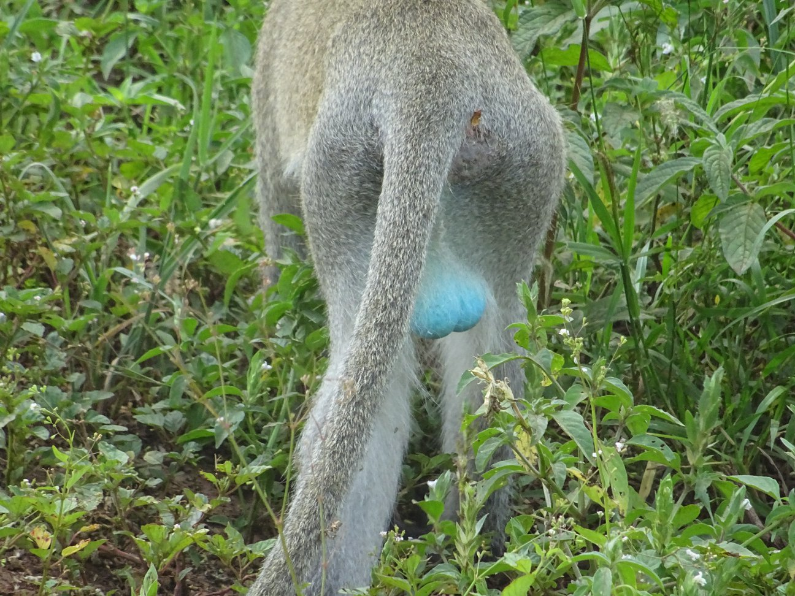
Yeap! What you are watching is real! I didn’t paint it!
My gut-reaction was to shout loudly “Blue balls!!!!” with a huge smile in my face, the enthusiasm emanating from all my cells and almost clapping! The moment was absolutely embarrassing, but I had been taken by surprise by this marvelous dweller of Africa!. All of a sudden, I had found a new species to love: Chlorocebus pygerythrus, also known as Velvet monkeys.
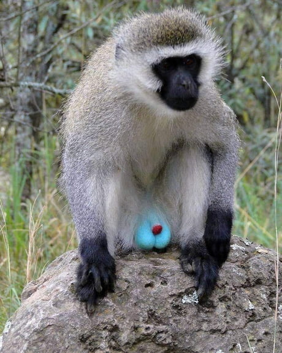
My gut-reaction was to shout loudly “Blue balls!!!!” with a huge smile in my face, the enthusiasm emanating from all my cells and almost clapping! The moment was absolutely embarrassing, but I had been taken by surprise by this marvelous dweller of Africa!. All of a sudden, I had found a new species to love: Chlorocebus pygerythrus, also known as Velvet monkeys.
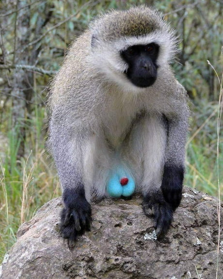
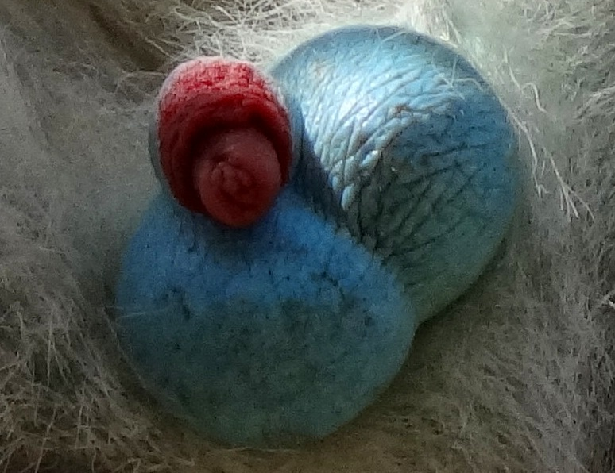
As mammals, we lost the contest of “real body painting”: while a lot of animals use different types of pigments and take advantage of structural coloration to decorate their personal image, making a picturesque fashion show, we only have melanocytes. Basically, we have the hue brown and black and the mix between them through eumelanin, and yellow and redish and the mix between them through pheomelanin, and we lack the chance to apply structural coloration because it doesn’t work properly in mammals' hair.
But quaintly, Vervet monkeys do exhibit a bright blue scrotum.
This is actually an exception to the aforementioned, as this is -in fact- a phenomenon of structural coloration.
But quaintly, Vervet monkeys do exhibit a bright blue scrotum.
This is actually an exception to the aforementioned, as this is -in fact- a phenomenon of structural coloration.
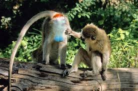
The structural coloration is the production of colour at molecular level, by microscopically structured surfaces fine enough to interfere with visible light. Specifically, in the case of Velvet monkeys, the blue color in its noble parts originates from the Tyndall effect, meaning the scattering of light by the skin itself. The collagen arrays are highly nanostructured at precisely the spatial scale to create the observed hue. They really want to attract attention, right?!!! Experts in the subject say that a minimal change in that distance would generate another completely different colour.
But, how is it possible, then? Well, by sexual selection! This is the answer for the development of secondary sexual characters not related to the survival of the best adapted. It means, "ok, the blue balls don’t help you overcome the savannah’s conditions as an individual but this physical feature does make you more attractive to females" (It attracted me indeed!). And that seems to be the reason why the spectacle is limited to sexual organs. Such a pity!
But, how is it possible, then? Well, by sexual selection! This is the answer for the development of secondary sexual characters not related to the survival of the best adapted. It means, "ok, the blue balls don’t help you overcome the savannah’s conditions as an individual but this physical feature does make you more attractive to females" (It attracted me indeed!). And that seems to be the reason why the spectacle is limited to sexual organs. Such a pity!
There are six species belonging to genus Chlorocebus (C. pygerythrus, C. aethiops, C. cynosuros, C. djamdjamensis, C. sabaeus and C. tantalus), all of them with characteristic opaque blue scrotum since born. In adolescence, differences among them emerge, showing different hues of blue.
But while some of them -and even other primates that also have a bright blue scrotum (as lesula or the green monkey)- see the diminishing of it while growing, even to completely white, for Chlorocebus pygerythrus, the monkey that blew my mind, "my monkey", becomes bluer and lightens with increasing age, boasting it as a sign of maturation. They can show off their "african natural jewelry" without a due date.
In contrast, here we have boring balls! Poor little thing! His face says everything! He wants to die!
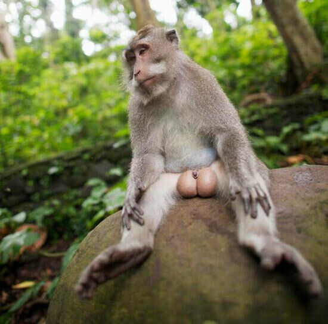
But while some of them -and even other primates that also have a bright blue scrotum (as lesula or the green monkey)- see the diminishing of it while growing, even to completely white, for Chlorocebus pygerythrus, the monkey that blew my mind, "my monkey", becomes bluer and lightens with increasing age, boasting it as a sign of maturation. They can show off their "african natural jewelry" without a due date.
In contrast, here we have boring balls! Poor little thing! His face says everything! He wants to die!
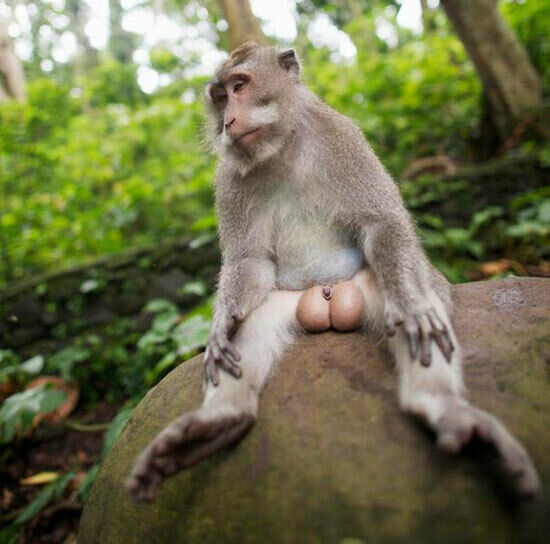
They have a splendid audition and interpretation of it. Mothers can recognise their offspring by a scream alone, and at least 30 different calls to warn about different predators have been identified. Arguably, this can seem quite regular, but this sophisticated system of vocalizations is paramount for its survival, due to the fact that they react in specific ways according to the threat.
For instance, if the call alerts about the presence of a predator in the land (such as a lioness or a leopard), the action unfolded is climbing trees, but if the call refers to birds of prey, on the contrary, the monkeys scatter in a haste and hide in vegetation. If the alarm is caused by a snake, what the group does is… to gather and face it, unleashing their violent instinct and strongly believing that they have to kill it in order to defend themselves.
For instance, if the call alerts about the presence of a predator in the land (such as a lioness or a leopard), the action unfolded is climbing trees, but if the call refers to birds of prey, on the contrary, the monkeys scatter in a haste and hide in vegetation. If the alarm is caused by a snake, what the group does is… to gather and face it, unleashing their violent instinct and strongly believing that they have to kill it in order to defend themselves.
 I don’t know you but I learnt a lot during the research of the scientific reason for the blue balls! It gave me a lot to think about!
I don’t know you but I learnt a lot during the research of the scientific reason for the blue balls! It gave me a lot to think about!What would have been of us as species if sexual selection had imposed the same pattern that our cousins, the velvet monkeys, have?... Or if that phenomenon, the Tyndall effect, had implied an advantage in the natural environment so it had spread to the whole body...?
Can you imagine our lives as huge pitufos, a less impulsive beast from X-man movies or like avatars from Pandora…?
From my point of view, the sculpture “King Kong Balls”, made by the french artist Denis Defrancesco and exhibited in Czech Republic in 2019, is close enough to that envision in my mind…
The end…
Thank you for reading me!!
I really wish that you have relished my work. I not only wrote the text but also coded the webpage and its design. The challenge is big, but I'm an enthusiastic learner.
Please give me your I LIKE and SHARE the publication to expand the community of MARVELOUS DWELLERS! If you access thought a computer, remember you can leave your comments at the end of the page. Or you can send me an e-mail, if you want!. Either way you choose, I would appreciate a lot your support!.
If you liked the topic, I invite you to read the bonus content below.
This topic about colours is very interesting!
I don’t want to disturb you, but if you have blue eyes you should know that you have it in the same way as Velvet monkeys have their blue scrotum.
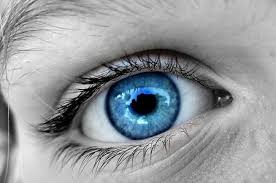 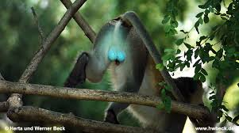
I found this thought a wee funny, but seriously it is just another example of the Tyndall effect, and to be fair, it is also the way why the sky is blue. The strome of your iris has no pigment, it’s translucent, so the white light is reflected and gets scattered after undergoing reflection. Sunlight reaches Earth's atmosphere and is scattered in all directions by all the gases and particles in the air. The blue colour gets scattered more than the other colours because of its shorter wavelength. Blue eyes, blue sky (and blue balls).
If want to make your own research, there’re a lot of other common situations that represent this phenomenon: visible rays of sunlight, scattering of car light in fog, smoke from vehicles, etc.
Without further to do, I say goodbye for now! Until the next post!
Some sources:
Velvet by Britannica
"Some Monkeys Have Blue Testicles — Here's Why" by National Geographic
Vervet Monkey (Chlorocebus pygerythrus) by San Diego Zoo Wildlife Alliance Library
Structural coloration by Wikipedia
"Why Is the Sky Blue?" by NASA Science Space Place
I don’t want to disturb you, but if you have blue eyes you should know that you have it in the same way as Velvet monkeys have their blue scrotum.
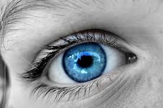 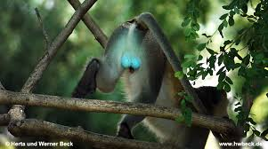
I found this thought a wee funny, but seriously it is just another example of the Tyndall effect, and to be fair, it is also the way why the sky is blue. The strome of your iris has no pigment, it’s translucent, so the white light is reflected and gets scattered after undergoing reflection. Sunlight reaches Earth's atmosphere and is scattered in all directions by all the gases and particles in the air. The blue colour gets scattered more than the other colours because of its shorter wavelength. Blue eyes, blue sky (and blue balls).
If want to make your own research, there’re a lot of other common situations that represent this phenomenon: visible rays of sunlight, scattering of car light in fog, smoke from vehicles, etc.
Without further to do, I say goodbye for now! Until the next post!
Some sources:
Velvet by Britannica
"Some Monkeys Have Blue Testicles — Here's Why" by National Geographic
Vervet Monkey (Chlorocebus pygerythrus) by San Diego Zoo Wildlife Alliance Library
Structural coloration by Wikipedia
"Why Is the Sky Blue?" by NASA Science Space Place